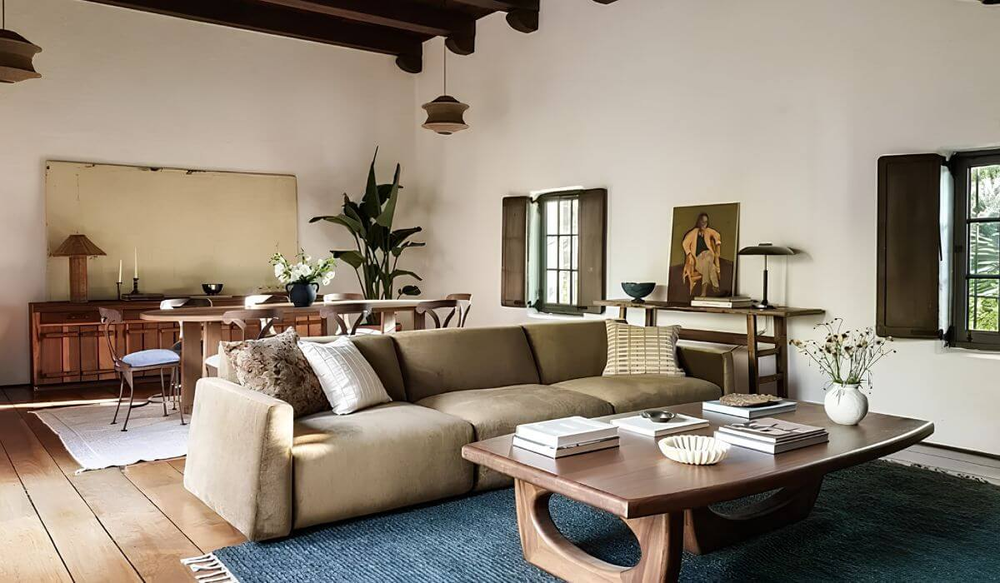
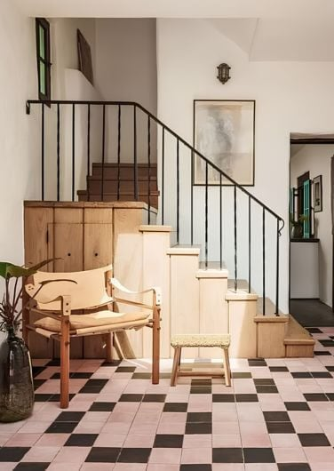

Obsession No. 001
Obsession No. 001West Adams Terrace · Los Angeles
2414
4th Ave
The courtyard cactus is taller than the roofline, and that’s not even the best reason this one’s on the list.
Why it made the edit
“Somebody decided decades ago it got to keep going.”
This one made the list because of the cactus, which sounds like an odd reason to fall for a house until you actually see it, guarding the courtyard gate, grown taller than the roofline because somebody decided decades ago it got to keep going instead of getting cut back to a tidy size, and that tells you everything about how this place has actually been cared for.
It went up in 1922, built of adobe and designed by architect Harwood Hewitt, and it is both Los Angeles Historic-Cultural Monument No. 621 and part of the West Adams Terrace HPOZ—which is a fancy way of saying nobody gets to erase what makes it what it is.
Walk in and the original tile is still doing its job at the base of the stairs, the ceilings are wood-beamed, the hardwood floors have a hundred years of actual life in them, and the kitchen’s been brought current without stripping any of that out.
If a house with real history instead of six months of staging is what you’re after, tell me and let’s go see it.


Want to see it in person?
Curious about this one?
Let’s talk.
Listed by Molly Kelley & Daria Greenbaum, Compass. House of Zonshine does not represent this listing. Property details are from listing information and public sources and should be independently verified.